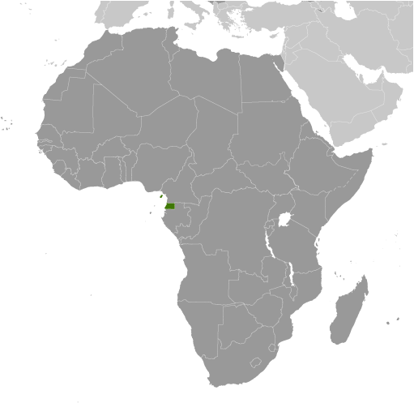
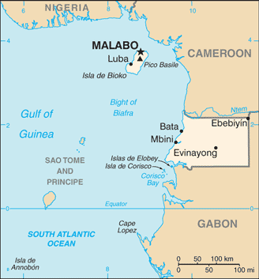
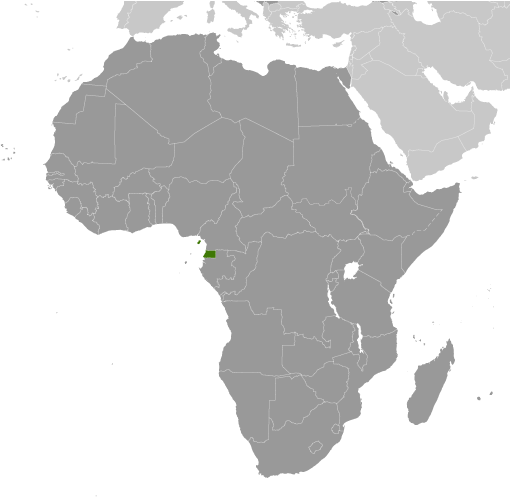
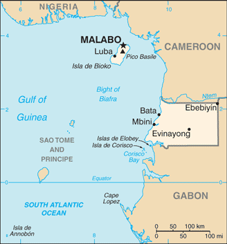

Africa :: EQUATORIAL GUINEA
Introduction :: EQUATORIAL GUINEA
-
Equatorial Guinea gained independence in 1968 after 190 years of Spanish rule; it is one of the smallest countries in Africa consisting of a mainland territory and five inhabited islands. The capital of Malabo is located on the island of Bioko, approximately 25 km from the Cameroonian coastline in the Gulf of Guinea. Between 1968 and 1979, autocratic President Francisco MACIAS NGUEMA virtually destroyed all of the country's political, economic, and social institutions before being deposed by his nephew Teodoro OBIANG NGUEMA MBASOGO in a coup. President OBIANG has ruled since October 1979 and was reelected in 2016. Although nominally a constitutional democracy since 1991, presidential and legislative elections since 1996 have generally been labeled as flawed. The president exerts almost total control over the political system and has placed legal and bureaucratic barriers that prevent political opposition. Equatorial Guinea has experienced rapid economic growth due to the discovery of large offshore oil reserves, and in the last decade has become Sub-Saharan Africa's third largest oil exporter. Despite the country's economic windfall from oil production, resulting in a massive increase in government revenue in recent years, the drop in global oil prices has placed significant strain on the state budget. Equatorial Guinea continues to seek to diversify its economy and to increase foreign investment despite limited improvements in the population's living standards. Equatorial Guinea is the host of major regional and international conferences and continues to seek a greater role in regional affairs.
Geography :: EQUATORIAL GUINEA
-
Central Africa, bordering the Bight of Biafra, between Cameroon and Gabon2 00 N, 10 00 EAfricatotal: 28,051 sq kmland: 28,051 sq kmwater: 0 sq kmcountry comparison to the world: 146slightly smaller than Marylandtotal: 528 kmborder countries (2): Cameroon 183 km, Gabon 345 km296 kmterritorial sea: 12 nmexclusive economic zone: 200 nmtropical; always hot, humidcoastal plains rise to interior hills; islands are volcanicmean elevation: 577 melevation extremes: lowest point: Atlantic Ocean 0 mhighest point: Pico Basile 3,008 mpetroleum, natural gas, timber, gold, bauxite, diamonds, tantalum, sand and gravel, clayagricultural land: 10.1%arable land 4.3%; permanent crops 2.1%; permanent pasture 3.7%forest: 57.5%other: 32.4% (2011 est.)NAonly two large cities over 30,000 people (Bata on the mainland, and the capital Malabo on the island of Bioko); small communities are scattered throughout the mainland and the five inhabited islandsviolent windstorms; flash floodsvolcanism: Santa Isabel (3,007 m), which last erupted in 1923, is the country's only historically active volcano; Santa Isabel, along with two dormant volcanoes, form Bioko Island in the Gulf of Guineatap water is non-potable; deforestationparty to: Biodiversity, Climate Change, Climate Change-Kyoto Protocol, Desertification, Endangered Species, Hazardous Wastes, Law of the Sea, Marine Dumping, Ozone Layer Protection, Ship Pollution, Wetlandssigned, but not ratified: none of the selected agreementsinsular and continental regions widely separated
People and Society :: EQUATORIAL GUINEA
-
778,358 (July 2017 est.)country comparison to the world: 164noun: Equatorial Guinean(s) or Equatoguinean(s)adjective: Equatorial Guinean or EquatoguineanFang 85.7%, Bubi 6.5%, Mdowe 3.6%, Annobon 1.6%, Bujeba 1.1%, other 1.4% (1994 census)Spanish (official) 67.6%, other (includes French (official), Fang, Bubi) 32.4% (1994 census)nominally Christian and predominantly Roman Catholic, pagan practicesEquatorial Guinea is one of the smallest and least populated countries in continental Africa and is the only independent African country where Spanish is an official language. Despite a boom in oil production in the 1990s, authoritarianism, corruption, and resource mismanagement have concentrated the benefits among a small elite. These practices have perpetuated income inequality and unbalanced development, such as low public spending on education and health care. Unemployment remains problematic because the oil-dominated economy employs a small labor force dependent on skilled foreign workers. The agricultural sector, Equatorial Guinea’s main employer, continues to deteriorate because of a lack of investment and the migration of rural workers to urban areas. About three-quarters of the population lives below the poverty line.Equatorial Guinea’s large and growing youth population – about 60% are under the age of 25 – is particularly affected because job creation in the non-oil sectors is limited, and young people often do not have the skills needed in the labor market. Equatorial Guinean children frequently enter school late, have poor attendance, and have high dropout rates. Thousands of Equatorial Guineans fled across the border to Gabon in the 1970s to escape the dictatorship of MACIAS NGUEMA; smaller numbers have followed in the decades since. Continued inequitable economic growth and high youth unemployment increases the likelihood of ethnic and regional violence.0-14 years: 39.81% (male 157,388/female 152,469)15-24 years: 19.72% (male 78,145/female 75,348)25-54 years: 32.15% (male 125,108/female 125,096)55-64 years: 4.37% (male 14,676/female 19,349)65 years and over: 3.95% (male 12,808/female 17,971) (2017 est.)total dependency ratio: 67.5youth dependency ratio: 62.7elderly dependency ratio: 4.8potential support ratio: 20.6 (2015 est.)total: 19.8 yearsmale: 19.3 yearsfemale: 20.3 years (2017 est.)country comparison to the world: 1962.44% (2017 est.)country comparison to the world: 2432.2 births/1,000 population (2017 est.)country comparison to the world: 327.8 deaths/1,000 population (2017 est.)country comparison to the world: 970 migrant(s)/1,000 population (2017 est.)country comparison to the world: 80only two large cities over 30,000 people (Bata on the mainland, and the capital Malabo on the island of Bioko); small communities are scattered throughout the mainland and the five inhabited islandsurban population: 40.3% of total population (2017)rate of urbanization: 3.09% annual rate of change (2015-20 est.)MALABO (capital) 145,000 (2014)at birth: 1.03 male(s)/female0-14 years: 1.03 male(s)/female15-24 years: 1.04 male(s)/female25-54 years: 1 male(s)/female55-64 years: 0.76 male(s)/female65 years and over: 0.72 male(s)/femaletotal population: 0.99 male(s)/female (2016 est.)342 deaths/100,000 live births (2015 est.)country comparison to the world: 37total: 65.2 deaths/1,000 live birthsmale: 66.3 deaths/1,000 live birthsfemale: 64.1 deaths/1,000 live births (2017 est.)country comparison to the world: 14total population: 64.6 yearsmale: 63.4 yearsfemale: 65.8 years (2017 est.)country comparison to the world: 1834.39 children born/woman (2017 est.)country comparison to the world: 2512.6% (2011)3.8% of GDP (2014)country comparison to the world: 1652.1 beds/1,000 population (2010)improved:urban: 72.5% of populationrural: 31.5% of populationtotal: 47.9% of populationunimproved:urban: 27.5% of populationrural: 68.5% of populationtotal: 52.1% of population (2015 est.)improved:urban: 79.9% of populationrural: 71% of populationtotal: 74.5% of populationunimproved:urban: 20.1% of populationrural: 29% of populationtotal: 25.5% of population (2015 est.)6.2% (2016 est.)country comparison to the world: 1135,000 (2016 est.)country comparison to the world: 63<1000 (2016 est.)degree of risk: very highfood or waterborne diseases: bacterial and protozoal diarrhea, hepatitis A, and typhoid fevervectorborne disease: malaria and dengue feveranimal contact disease: rabies (2016)8% (2016)country comparison to the world: 1565.6% (2010)country comparison to the world: 87definition: age 15 and over can read and writetotal population: 95.3%male: 97.4%female: 93% (2015 est.)
Government :: EQUATORIAL GUINEA
-
conventional long form: Republic of Equatorial Guineaconventional short form: Equatorial Guinealocal long form: Republica de Guinea Ecuatorial/Republique de Guinee Equatorialelocal short form: Guinea Ecuatorial/Guinee Equatorialeformer: Spanish Guineaetymology: the country is named for the Guinea region of West Africa that lies along the Gulf of Guinea and stretches north to the Sahel; the "equatorial" refers to the fact that the country lies just north of the Equatorpresidential republicname: Malabo; note - a new capital of Oyala is being built on the mainland near Djibloho; Malabo is on the island of Biokogeographic coordinates: 3 45 N, 8 47 Etime difference: UTC+1 (6 hours ahead of Washington, DC, during Standard Time)7 provinces (provincias, singular - provincia); Annobon, Bioko Norte, Bioko Sur, Centro Sur, Kie-Ntem, Litoral, Wele-Nzas12 October 1968 (from Spain)Independence Day, 12 October (1968)history: previous 1968, 1973, 1982; approved by referendum 17 November 1991amendments: proposed by the president of the republic or supported by three-fourths of the membership in either house of the National Assembly; passage requires three-fourths majority vote by both houses of the Assembly and approval in a referendum if requested by the president; amended several times, last in 2012 (2017)mixed system of civil and customary lawhas not submitted an ICJ jurisdiction declaration; non-party state to the ICCtcitizenship by birth: nocitizenship by descent only: at least one parent must be a citizen of Equatorial Guineadual citizenship recognized: noresidency requirement for naturalization: 10 years18 years of age; universalchief of state: President Brig. Gen. (Ret.) Teodoro OBIANG Nguema Mbasogo (since 3 August 1979 when he seized power in a military coup)head of government: Prime Minister Francisco Pascual Eyegue OBAMA Asue (since 23 June 2016); First Deputy Prime Minister Clemente Engonga NGUEMA Onguene (since 23 June 2016); Second Deputy Prime Minister Andres Jorge Mbomio Nsem ABUA (since 23 June 2016); Third Deputy Prime Minister Alfonso Nsue MOKUY (since 23 June 2016)cabinet: Council of Ministers appointed by the presidentelections/appointments: president directly elected by simple majority popular vote for a 7-year term (eligible for a second term); election last held on 24 April 2016 (next to be held in 2023); prime minister and deputy prime ministers appointed by the presidentelection results: Teodoro OBIANG Nguema Mbasogo reelected president; percent of vote - Teodoro OBIANG Nguema Mbasogo (PDGE) 93.5%, other 6.5%description: bicameral National Assembly or Asemblea Nacional, formerly the unicameral Parliament, consists of the Senate or Senado (70 seats; 55 members directly elected by simple majority vote and 15 appointed by the president) and the Chamber of Deputies or Camara de los Deputados (100 seats; members directly elected in multi-seat constituencies by proportional representation vote to serve 5-year terms); note - the constitutional referendum of 2011 established the Senate and was implemented at the time of the May 2013 electionselections: last held on 26 May 2013 (next to be held in 2018)election results: Senate - percent of vote by party - NA; seats by party - PDGE 54, CPDS 1; Chamber of Deputies - percent of vote by party - NA; seats by party - PDGE 99, CPDS 1highest court(s): Supreme Court of Justice (consists of the chief justice - who is also chief of state - and 9 judges and organized into civil, criminal, commercial, labor, administrative, and customary sections); Constitutional Court (consists of the court president and 4 members)judge selection and term of office: Supreme Court judges appointed by the president for 5-year terms; Constitutional Court members appointed by the president, 2 of which are nominated by the Chamber of Deputiessubordinate courts: Court of Guarantees; military courts; Courts of Appeal; first instance tribunals; district and county tribunalsConvergence Party for Social Democracy or CPDS [Andres ESONO ONDO]Democratic Party for Equatorial Guinea or PDGE [Teodoro OBIANG Nguema Mbasogo]Electoral Coalition or ECFront of Democratic Opposiiton or FOD (coalition includes CPDS, FDR, UP)Popular Action of Equatorial Guinea or APGE [Carmelo MBA BACALE]Popular Union or UP [Daniel MARTINEZ AYECABA]not officially registered parties: Democratic Republican Force or FDR [Guillermo NGUEMA ELA]Citizens for Innovation or CIParty for Progress of Equatorial Guinea or PPGE [Severo MOTO]Union for the Center Right or UDC [Avelino MOCACHE MEAENGA]ASODEGUE (Madrid-based pressure group for democratic reform)Coalicion CEIBA (group formed by diverse, exiled political parties)C.O.R.E.D. [Raimundo Ela NSANG] (based in Paris)EG Justice (US-based anti-corruption group)ACP, AfDB, AU, BDEAC, CEMAC, CPLP (associate), FAO, FZ, G-77, IBRD, ICAO, ICRM, IDA, IFAD, IFC, IFRCS, ILO, IMF, IMO, Interpol, IOC, IPU, ITSO, ITU, MIGA, NAM, OAS (observer), OIF, OPCW, UN, UNCTAD, UNESCO, UNIDO, UNWTO, UPU, WHO, WIPO, WTO (observer)chief of mission: Ambassador Miguel Ntutumu EVUNA ANDEME (since 23 February 2015)chancery: 2020 16th Street NW, Washington, DC 20009telephone: [1] (202) 518-5700FAX: [1] (202) 518-5252consulate(s) general: Houstonchief of mission: Ambassador Julie FURUTA-TOY (since January 2016)embassy: Carretera Malabo II, Malabo, Guinea Ecuatorialmailing address: US Embassy Malabo, US Department of State, Washington, DC 20521-2520telephone: [240] 333 09 57 41three equal horizontal bands of green (top), white, and red, with a blue isosceles triangle based on the hoist side and the coat of arms centered in the white band; the coat of arms has six yellow six-pointed stars (representing the mainland and five offshore islands) above a gray shield bearing a silk-cotton tree and below which is a scroll with the motto UNIDAD, PAZ, JUSTICIA (Unity, Peace, Justice); green symbolizes the jungle and natural resources, blue represents the sea that connects the mainland to the islands, white stands for peace, and red recalls the fight for independencesilk cotton tree; national colors: green, white, red, bluename: "Caminemos pisando la senda" (Let Us Tread the Path)lyrics/music: Atanasio Ndongo MIYONO/Atanasio Ndongo MIYONO or Ramiro Sanchez LOPEZ (disputed)note: adopted 1968
Economy :: EQUATORIAL GUINEA
-
Exploitation of oil and gas deposits, beginning in the 1990s, has driven economic growth in Equatorial Guinea; a recent rebasing of GDP resulted in an upward revision of the size of the economy by approximately 30%. Forestry and farming are minor components of GDP. Although preindependence Equatorial Guinea counted on cocoa production for hard currency earnings, the neglect of the rural economy since independence has diminished the potential for agriculture-led growth. Subsistence farming is the dominant form of livelihood. Declining revenue from hydrocarbon production, high levels of infrastructure expenditures, lack of economic diversification, and corruption have pushed the economy into decline in recent years and limited improvements in the general population’s living conditions. Equatorial Guinea’s real GDP growth has been weak in recent years, averaging -0.5% per year from 2010 to 2014, because of a declining hydrocarbon sector. Inflation remained very low in 2016, down from an average of 4% in 2014.Foreign assistance programs by the World Bank and the IMF have been cut since 1993 because of corruption and mismanagement, and as a middle income country Equatorial Guinea is now ineligible for most low-income donor funding. The government has been widely criticized for its lack of transparency and misuse of oil revenues and has attempted to address this issue by working toward compliance with the Extractive Industries Transparency Initiative. US foreign assistance to Equatorial Guinea is limited in part because of US restrictions pursuant to the Trafficking Victims Protection Act.Equatorial Guinea hosted two economic diversification symposia in 2014 that focused on attracting investment in five sectors: agriculture and animal ranching, fishing, mining and petrochemicals, tourism, and financial services. Undeveloped mineral resources include gold, zinc, diamonds, columbite-tantalite, and other base metals.$31.18 billion (2016 est.)$34.09 billion (2015 est.)$37.11 billion (2014 est.)note: data are in 2016 dollarscountry comparison to the world: 128$10.18 billion (2016 est.)-9.7% (2016 est.)-9.1% (2015 est.)-0.7% (2014 est.)country comparison to the world: 220$38,000 (2016 est.)$43,200 (2015 est.)$48,800 (2014 est.)note: data are in 2016 dollarscountry comparison to the world: 460.5% of GDP (2016 est.)17.6% of GDP (2015 est.)35.5% of GDP (2014 est.)country comparison to the world: 116household consumption: 54.3%government consumption: 25%investment in fixed capital: 28.4%investment in inventories: 0.2%exports of goods and services: 55.5%imports of goods and services: -63.4% (2016 est.)agriculture: 2.3%industry: 57.2%services: 40.5% (2016 est.)coffee, cocoa, rice, yams, cassava (manioc, tapioca), bananas, palm oil nuts; livestock; timberpetroleum, natural gas, sawmilling-10.2% (2016 est.)country comparison to the world: 199195,200 (2007 est.)country comparison to the world: 1758.6% (2014 est.)22.3% (2009 est.)country comparison to the world: 10844% (2011 est.)lowest 10%: NA%highest 10%: NA%revenues: $3.22 billionexpenditures: $3.461 billion (2016 est.)27.7% of GDP (2016 est.)country comparison to the world: 98-2.1% of GDP (2016 est.)country comparison to the world: 9323.1% of GDP (2016 est.)15.8% of GDP (2015 est.)country comparison to the world: 178calendar year1.4% (2016 est.)1.7% (2015 est.)country comparison to the world: 1048.5% (31 December 2010)4.25% (31 December 2009)country comparison to the world: 3714% (31 December 2016 est.)14% (31 December 2015 est.)country comparison to the world: 53$1.467 billion (31 December 2016 est.)$1.79 billion (31 December 2015 est.)country comparison to the world: 140$1.864 billion (31 December 2016 est.)$2.208 billion (31 December 2015 est.)country comparison to the world: 156$2.254 billion (31 December 2016 est.)$1.557 billion (31 December 2015 est.)country comparison to the world: 143$-1.067 billion (2016 est.)$-1.215 billion (2015 est.)country comparison to the world: 126$5.042 billion (2016 est.)$7.071 billion (2015 est.)country comparison to the world: 104petroleum products, timberIndia 19.4%, China 13.5%, South Korea 13.2%, Spain 12.3%, Italy 5.1%, Netherlands 5.1%, US 4.1% (2016)$2.862 billion (2016 est.)$3.394 billion (2015 est.)country comparison to the world: 143petroleum sector equipment, other equipment, construction materials, vehiclesUS 23.3%, Spain 21.8%, China 12.8% (2016)$62.31 million (31 December 2016 est.)$1.205 billion (31 December 2015 est.)country comparison to the world: 167$1.074 billion (31 December 2016 est.)$1.131 billion (31 December 2015 est.)country comparison to the world: 166Cooperation Financiere en Afrique Centrale francs (XAF) per US dollar -593.01 (2016 est.)593.01 (2015 est.)591.45 (2014 est.)494.42 (2013 est.)510.53 (2012 est.)
Energy :: EQUATORIAL GUINEA
-
population without electricity: 300,000electrification - total population: 66%electrification - urban areas: 93%electrification - rural areas: 48% (2013)425 million kWh (2015 est.)country comparison to the world: 171395.3 million kWh (2015 est.)country comparison to the world: 1740 kWh (2016 est.)country comparison to the world: 1320 kWh (2016 est.)country comparison to the world: 145334,000 kW (2015 est.)country comparison to the world: 15355.1% of total installed capacity (2015 est.)country comparison to the world: 1420% of total installed capacity (2015 est.)country comparison to the world: 8444.9% of total installed capacity (2015 est.)country comparison to the world: 460% of total installed capacity (2015 est.)country comparison to the world: 179227,000 bbl/day (2016 est.)country comparison to the world: 36278,000 bbl/day (2014 est.)country comparison to the world: 270 bbl/day (2014 est.)country comparison to the world: 1211.1 billion bbl (1 January 2017 es)country comparison to the world: 420 bbl/day (2014 est.)country comparison to the world: 1375,200 bbl/day (2015 est.)country comparison to the world: 1750 bbl/day (2014 est.)country comparison to the world: 1515,197 bbl/day (2014 est.)country comparison to the world: 1656.2 billion cu m (2015 est.)country comparison to the world: 472.05 billion cu m (2015 est.)country comparison to the world: 885.01 billion cu m (2015 est.)country comparison to the world: 320 cu m (2013 est.)country comparison to the world: 12036.81 billion cu m (1 January 2017 es)country comparison to the world: 683.7 million Mt (2013 est.)country comparison to the world: 137
Communications :: EQUATORIAL GUINEA
-
total subscriptions: 10,000subscriptions per 100 inhabitants: 1 (July 2016 est.)country comparison to the world: 194total: 541,000subscriptions per 100 inhabitants: 71 (July 2016 est.)country comparison to the world: 170general assessment: digital fixed-line network in most major urban areas and decent mobile cellular coveragedomestic: fixed-line density is about 1 per 100 persons; mobile-cellular subscribership has been increasing and in 2016 stood at about 70 percent of the populationinternational: country code - 240; international communications from Bata and Malabo to African and European countries; satellite earth station - 1 Intelsat (Indian Ocean) (2016)state maintains control of broadcast media with domestic broadcast media limited to 1 state-owned TV station, 1 private TV station owned by the president's eldest son, 1 state-owned radio station, and 1 private radio station owned by the president's eldest son; satellite TV service is available; transmissions of multiple international broadcasters are accessible (2013).gqtotal: 180,597percent of population: 23.8% (July 2016 est.)country comparison to the world: 167
Transportation :: EQUATORIAL GUINEA
-
number of registered air carriers: 6inventory of registered aircraft operated by air carriers: 15annual passenger traffic on registered air carriers: 400,759annual freight traffic on registered air carriers: 461,650 mt-km (2015)3C (2016)7 (2013)country comparison to the world: 166total: 6over 3,047 m: 12,438 to 3,047 m: 21,524 to 2,437 m: 1under 914 m: 2 (2017)total: 12,438 to 3,047 m: 1 (2013)condensate 42 km; condensate/gas 5 km; gas 79 km; oil 71 km (2013)total: 2,880 km (2000)country comparison to the world: 168total: 5by type: cargo 1, chemical tanker 1, petroleum tanker 3foreign-owned: 1 (Norway 1) (2010)country comparison to the world: 125major seaport(s): Bata, Luba, MalaboLNG terminal(s) (export): Bioko Island
Military and Security :: EQUATORIAL GUINEA
-
0.18% of GDP (2016)0.78% of GDP (2014)Equatorial Guinea Armed Forces (FAGE): Equatorial Guinea National Guard (Guardia Nacional de Guinea Ecuatorial, GNGE (Army), Navy, Air Force (2013)18 years of age for selective compulsory military service, although conscription is rare in practice; 2-year service obligation; women hold only administrative positions in the Navy (2013)
Transnational Issues :: EQUATORIAL GUINEA
-
in 2002, ICJ ruled on an equidistance settlement of Cameroon-Equatorial Guinea-Nigeria maritime boundary in the Gulf of Guinea, but a dispute between Equatorial Guinea and Cameroon over an island at the mouth of the Ntem River and imprecisely defined maritime coordinates in the ICJ decision delayed final delimitation; UN urged Equatorial Guinea and Gabon to resolve the sovereignty dispute over Gabon-occupied Mbane and lesser islands and to create a maritime boundary in the hydrocarbon-rich Corisco Baycurrent situation: Equatorial Guinea is a source country for children subjected to sex trafficking and destination country for men, women, and children subjected to forced labor; Equatorial Guinean girls may be encouraged by their parents to engage in the sex trade in urban centers to receive groceries, gifts, housing, and money; children are also trafficked from nearby countries for work as domestic servants, market laborers, ambulant vendors, and launderers; women are trafficked to Equatorial Guinea from Cameroon, Benin, other neighboring countries, and China for forced labor or prostitutiontier rating: Tier 3 – Equatorial Guinea does not fully comply with the minimum standards on the elimination of trafficking and is not making significant efforts to do so; in 2014, the government made no efforts to investigate or prosecute any suspected trafficking offenders or to identify or protect victims, despite its 2004 law prohibiting all forms of trafficking and mandating the provision of services to victims; undocumented migrants continued to be deported without being screened to assess whether any were trafficking victims; authorities did not undertake any trafficking awareness campaigns, implement any programs to address forced child labor, or make any other efforts to prevent trafficking (2015)